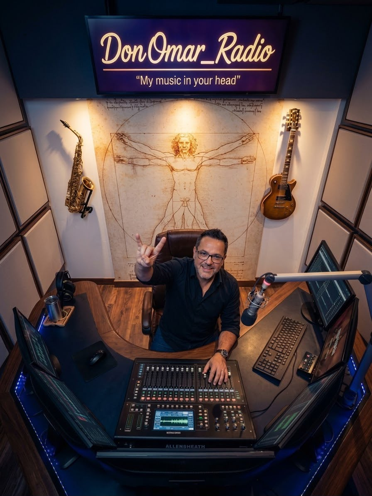

MIS VIDEOS RECOMENDADOS
Porque marcaron nuestra época dorada del rock.
COLECCIÓN DE VIDEOS
238 videos seleccionados para disfrutar directamente en YouTube.
▶ REPRODUCIR VIDEOS

Porque marcaron nuestra época dorada del rock.